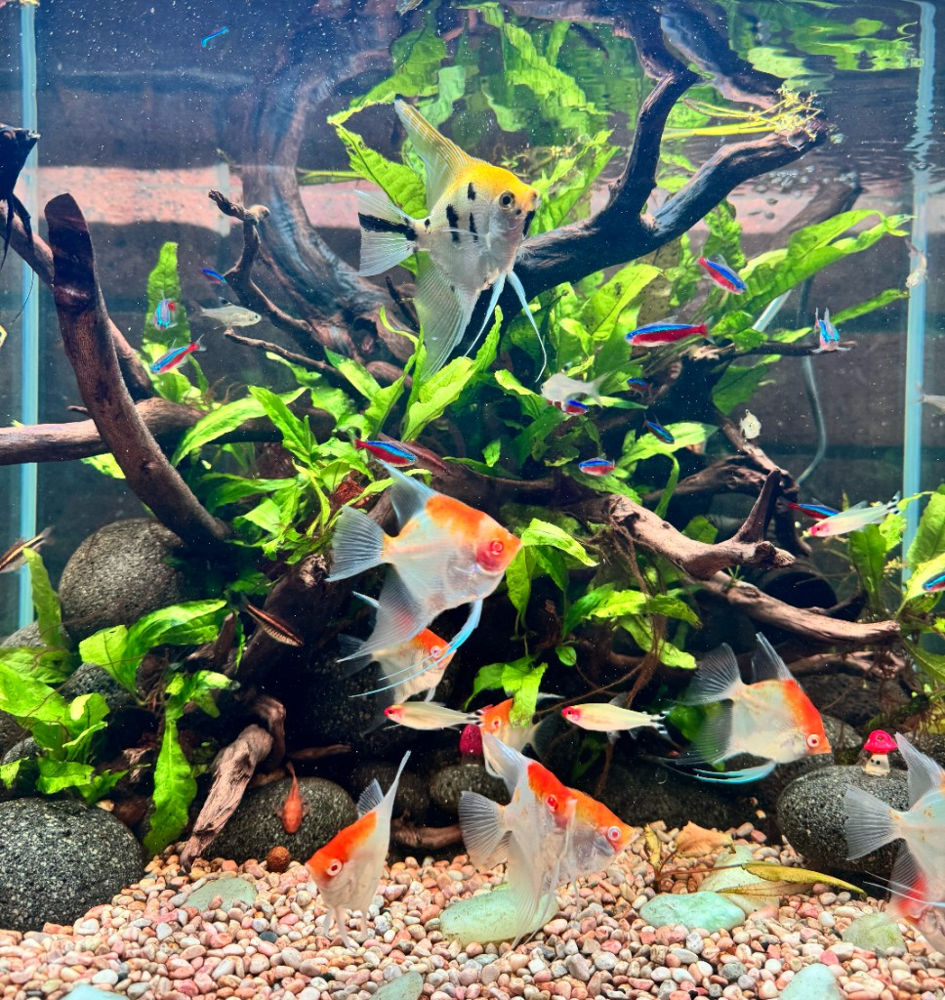

Presentation
Glass cleaning, aquascape tidy and visual checks so the display remains suitable for guests.
Aquarium maintenance
AquaLuSan provides ongoing maintenance for aquariums in guest-facing and workplace settings. Book a consultation if you already have a display, or add care to a new installation quote.

Typical visit scope
A maintenance programme is confirmed after we see the aquarium, equipment and venue access. A typical visit may include:
Glass cleaning, aquascape tidy and visual checks so the display remains suitable for guests.
Water testing, filter attention and equipment checks as required for that system.
Observation of fish, invertebrates and plants, with recommendations if something needs changing.
Visits planned around opening hours, loading access and any site induction requirements you provide.
Send the tank size, suburb and a few photos with your quote request so AquaLuSan can propose a visit schedule.